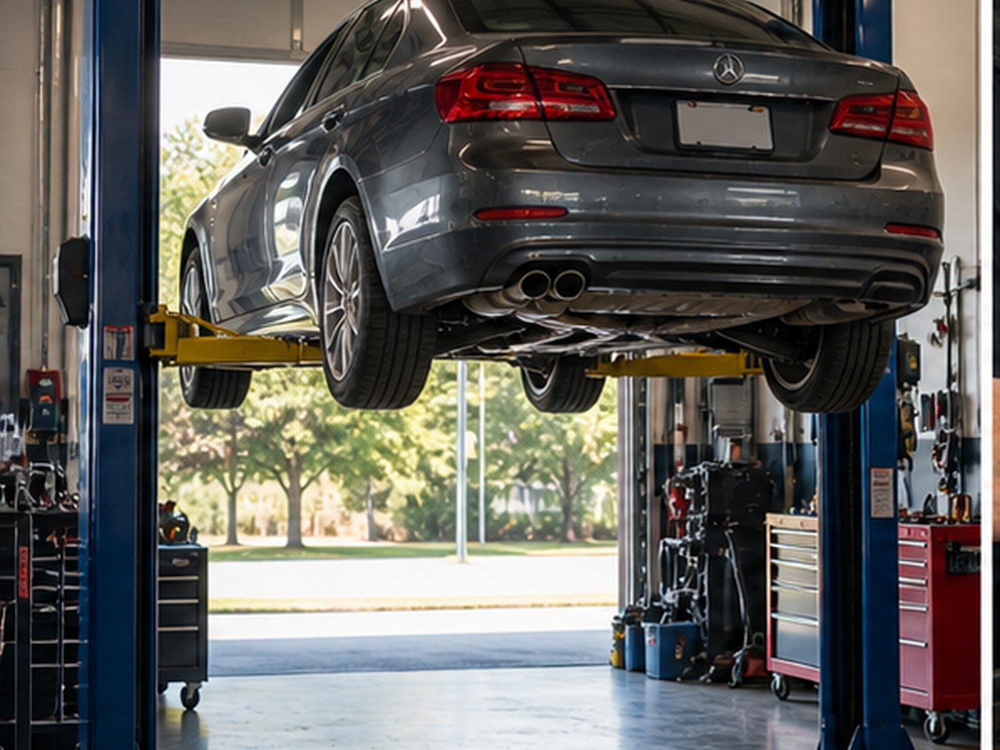
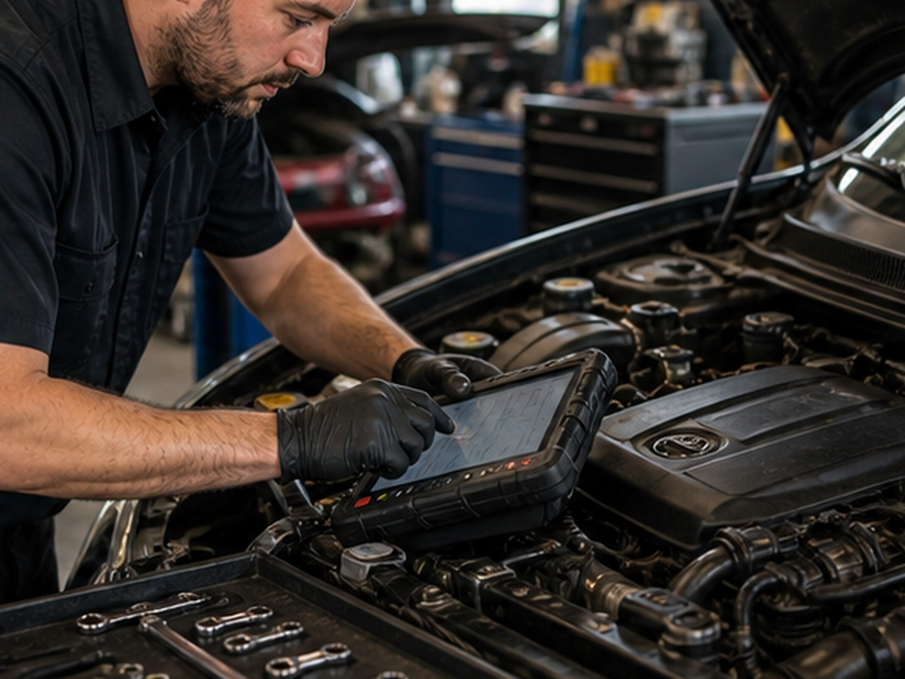
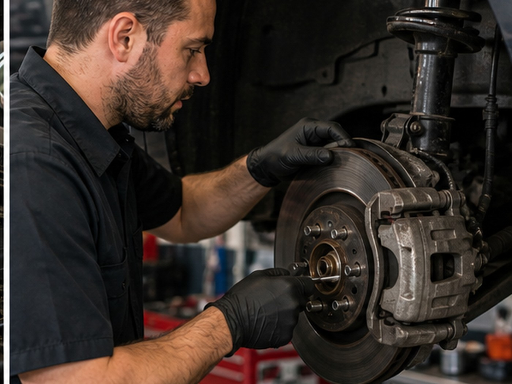

Woodruff trusted mechanic
Personal auto repair support for Woodruff drivers.
Diagnostics, general repair, brake service, maintenance, oil changes, and vehicle checks with a phone-first service path.
- 4.957 Google reviews
- Auto RepairWoodruff, SC
- FastTap-to-call scheduling

Services
Clear options for local customers.
- Diagnostics
- General repair
- Brake service
- Maintenance
- Oil changes
- Vehicle checks

Local service
Owner-name trust with clear service options.
Ken's Auto keeps the service path personal and practical for Woodruff drivers who need repair help, maintenance, or diagnostics.

Service path
What should the visit focus on?
Diagnostic requests should capture symptoms, vehicle details, and whether the issue is safe to drive.
Local proof
Built around the trust customers already look for.
- 4.9-star Google rating
- 57 public reviews
- Owner-name trust signal
Contact
Ken's Auto
233 Elijah Simmons Rd, Woodruff, SC